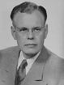

FORMER JUDGES
Judge Francis Leroy Wiltrout
Francis Leroy Wiltrout was born in May 8, 1907. He graduated from Indiana University
Law School in Bloomington in 1933. During World War II, he served in the United States
Air Force and retired with the rank of Lieutenant Colonel.
Judge Wiltrout was elected to the Indiana Appellate Court in 1948 and served from January
1, 1949. Until December 31, 1952. He was Chief Judge during the November 1950 term.
During his time on the court, he completed Judge Dan Flanagan’s three volume work Civil
Trial and Appellate practice.
Judge Wiltrout, a member of the Indiana State Bar Association, served as President of the
Elkhart County Bar Association. He was a member of the Elkhart Kiwanis Club, the
American Legion, and the American Radio Club.
Judge Wiltrout died in Elkhart on August 20, 1978 at the age of 71. He was survived by his
Wife Margaret, and his three children, Roy, Ann and Margaret.
Law School in Bloomington in 1933. During World War II, he served in the United States
Air Force and retired with the rank of Lieutenant Colonel.
Judge Wiltrout was elected to the Indiana Appellate Court in 1948 and served from January
1, 1949. Until December 31, 1952. He was Chief Judge during the November 1950 term.
During his time on the court, he completed Judge Dan Flanagan’s three volume work Civil
Trial and Appellate practice.
Judge Wiltrout, a member of the Indiana State Bar Association, served as President of the
Elkhart County Bar Association. He was a member of the Elkhart Kiwanis Club, the
American Legion, and the American Radio Club.
Judge Wiltrout died in Elkhart on August 20, 1978 at the age of 71. He was survived by his
Wife Margaret, and his three children, Roy, Ann and Margaret.
